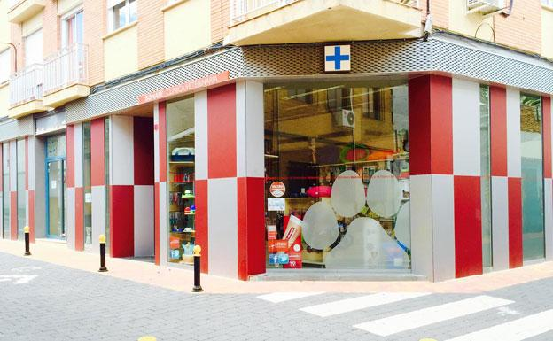

Como surgimos
Dog's Service surge de la necesidad de ayudar a las familias y a sus mascotas a la hora
de buscar un lugar confiable para solicitar los servicios de cuidado de nuestras mascotas.
Trabajamos en el ámbito Veterinario desde el año 2000, en la ciudad de Mar del Plata, y desde el año 2022
expandiendonos a través de redes sociales.
